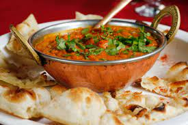
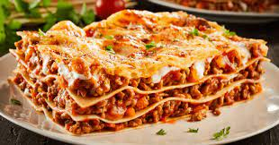
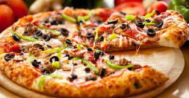
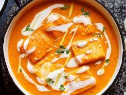
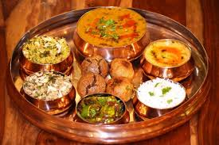

FEATURED
Pancake
Looking for a delicious breakfast? Try our mouth-watering pancakes! With a fluffy texture and a sweet, buttery flavor, our pancakes are the perfect way to start your day.
Pasta

Pasta is a popular Italian dish made from durum wheat flour and water, typically served with a variety of sauces, vegetables, and meats. It is a versatile and easy-to-prepare dish that is enjoyed worldwide
Kadai Paneer
Kadai Paneer is a popular North Indian dish made with paneer, onions, tomatoes, and bell peppers, cooked in a spicy gravy with a blend of aromatic spices. It is often served with naan, roti, or rice and is a favorite among vegetarian food lovers.
Lasagna
Lasagna is a classic Italian pasta dish made by layering flat noodles with tomato sauce, cheese, and often meat or vegetables. It's typically baked in the oven until the cheese is melted and bubbly.
Pizza
Pizza is a popular Italian dish made from dough, tomato sauce, cheese, and various toppings such as meats, vegetables, and herbs. It is typically cooked in a high-temperature oven, resulting in a crispy crust and melted cheese.
Paneer Butter Masala
Paneer butter masala is a popular North Indian dish made with paneer (cottage cheese) cooked in a creamy tomato-based sauce with spices like cumin, coriander, and garam masala, finished with a generous amount of butter and cream.
Dal Bati
Dal Bati is a popular dish from the Rajasthan region of India, made with a mixture of lentils and wheat flour, served with ghee and chutney.
Chocochip Cookies

Chocochip cookies are a delicious treat that combine the classic cookie taste with the added sweetness of chocolate chips. The crispy exterior and chewy center make them a perfect dessert or snack for any occasion.
Biryani

Biryani is a popular South Asian dish made with rice, spices, and meat or vegetables. It is often served with raita and is known for its fragrant aroma and rich flavors.